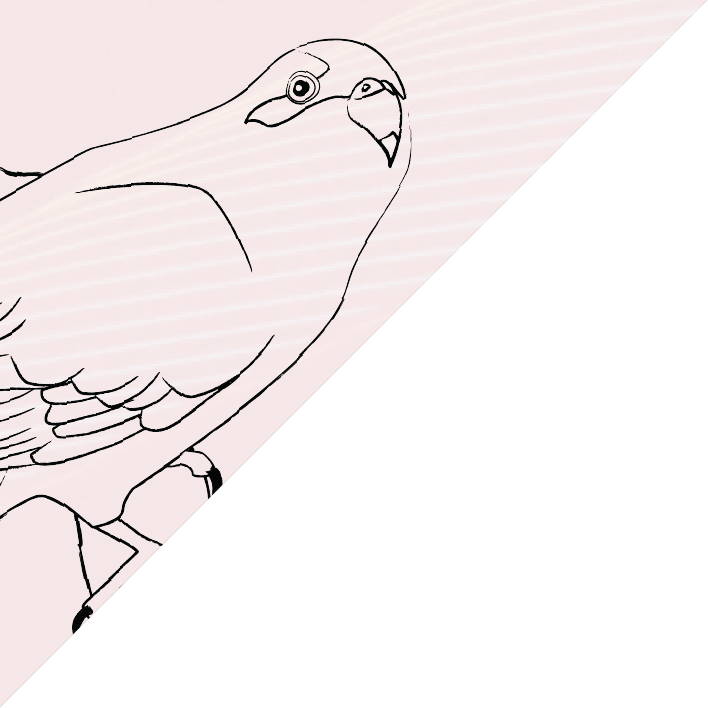
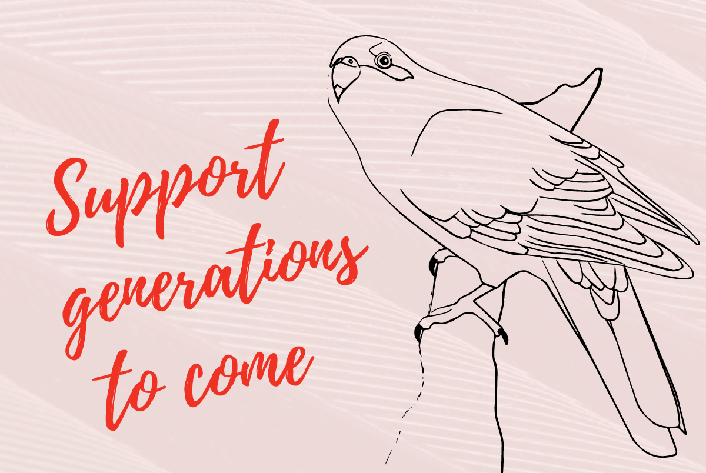

MARKETING
\
DESIGN
|
CONTACT

Fundraising
I have worked across multiple donation appeals, producing successful fundraising campaigns on very limited budgets.

Campaign Management - Graphic Design - Direct Marketing - Message Development - Print Media - Digital Marketing